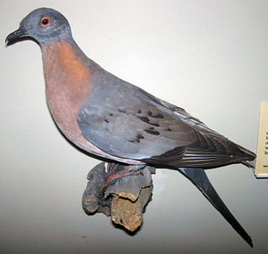
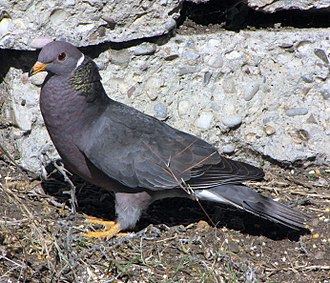

The passenger pigeon was a member of the pigeon and dove family, Columbidae. Its closest living relatives were long thought to be the Zenaida doves, based on morphological grounds, particularly the physically similar mourning dove (now Z. macroura).It was even suggested that the mourning dove belonged to the genus Ectopistes and was listed as E. carolinensis by some authors, including Thomas Mayo Brewer. The passenger pigeon was supposedly descended from Zenaida pigeons that had adapted to the woodlands on the plains of central North America.
--Stuffed male passenger pigeon, Field Museum of Natural History.
The passenger pigeon differed from the species in the genus Zenaida in being larger, lacking a facial stripe, being sexually dimorphic, and having iridescent neck feathers and a smaller clutch. In a 2002 study by American geneticist Beth Shapiro et al., museum specimens of the passenger pigeon were included in an ancient DNA analysis for the first time (in a paper focusing mainly on the dodo), and it was found to be the sister taxon of the cuckoo-dove genus Macropygia. The Zenaida doves were instead shown to be related to the quail-doves of the genus Geotrygon and the Leptotila doves.
--Band-tailed pigeon, a species in the related genus Patagioenas
A more extensive 2010 study instead showed that the passenger pigeon was most closely related to the New World Patagioenas pigeons, including the band-tailed pigeon (P. fasciata) of western North America, which are related to the Southeast Asian species in the genera Turacoena, Macropygia and Reinwardtoena. This clade is also related to the Columba and Streptopelia doves of the Old World (collectively termed the "typical pigeons and doves"). The authors of the study suggested that the ancestors of the passenger pigeon may have colonized the New World from South East Asia by flying across the Pacific Ocean, or perhaps across Beringia in the north.